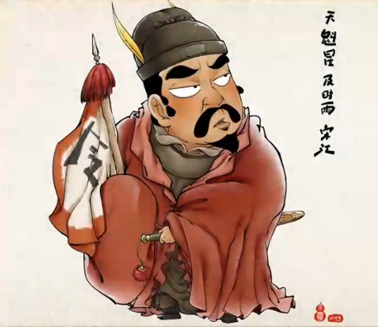
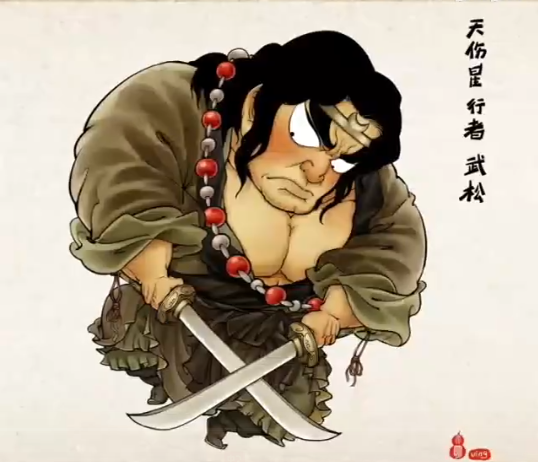

[Add]

Author

Spirit

Influence
Author
Shi Nai'an (1296-1370), Han nationality, formerly known as Yanduan, the word Zhaorui, the number Zi'an, alias Nai'an. A native of Xinghua, Jiangsu, he was a famous writer in the late Yuan and early Ming dynasties. Born in Xinghua in 1296, the son of Zhouren, Xiucai in the first year of Yuan Yanyou (1314), raised in the first year of Taiding (1324), and Dengjinshi in the second year of Zhishun (1331), and soon served as Yin of Qiantang County, Zhejiang. After abandoning the official and returning to the country, he wrote behind closed doors, studied the creation of "Romance of the Three Kingdoms" and "The Legend of the Three Suiping Demons" with his disciple Luo Guanzhong, collected and sorted out the stories of heroes such as Liangshanbo and Song Jiang, and finally wrote "Water Margin", one of the "Four Great Masterpieces", Zhu Yuanzhang repeatedly refused; In the end, Ju Huai'an died at the age of 74. Shi Nai'an's hometown in Shijiaqiao Village, Xinghua Xinduo Township, Jiangsu Province, has a cemetery and a memorial hall, and there is a "Shi Family Book" surviving.
Spirit
"Water Margin" features countless heroes as the protagonists, and through their struggles and struggles, they show a variety of different personalities, values and codes of conduct. One of the most prominent core ideas is the word "loyalty". Loyalty is presented to each protagonist, whether they are grass cowards or anti-Japanese heroes, they all uphold the loyalty of the country and the Son of Heaven, and fight for justice and justice. By recruiting soldiers, organizing uprisings, and cracking down on corrupt officials, they hope to change the reality of a deeply oppressed society and achieve social fairness and justice.
Influence
"Water Margin" has created the beauty of heroic legends, which has not only had a certain impact on the creation of heroic and legendary novels in China, the entire novel culture and national spirit, but also has been widely circulated around the world and has been highly praised